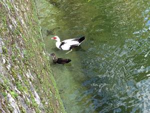
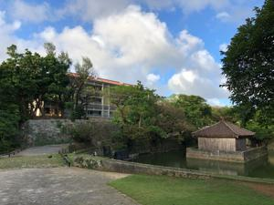
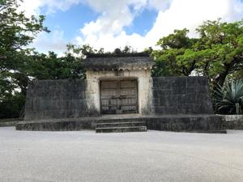

うるがいの話 ある日
最新:
雷
うるがいとは 前提知識です
カニの画像をクリックすると『うるがいの話』サイトを表示します

うるがい(ｳﾙｶﾞｲ urugai)とは、『もずくがに』の名前でとても大きくなります。

たながー（ﾀﾅｶﾞｰtanagaa）とは手長えびのことで、何種類かあり大きいのは車
エビぐらいになります。

ぶながー(bunagaa)とは、赤い髪の毛、赤い身体、そして身長は１ｍ２０ｃｍ
ぐらい、川の蟹を食べているの目撃された。場所は沖縄県国頭郡大宜味村のと
ある村僕の隣近所に住んでいる爺さんから、聞いた話です。
2021年07月12日 (月）雷
16:30



昼から、雷の音が時々鳴り響いている。そして夕方４時過ぎ、ぱらぱらと降る
昨日の夜、ＢＳで放送された「ワイドパンチ」１９６９年製作の西部劇の録画
を見ていると、でた！ムカデが！と２階から悲鳴が、殺して！・・・、本当に
５センチ程のムカデである。数日前は、４ｃｍ程のクモであった。見事、虫ス
プレーで殺した。クモは、素早くで逃げられたが・・・。なぜ、ムカデが２階
にいるのか、となぜかヨメに責められている。早速、バルサンをメイクマンで
購入、直ぐにやるかと思ったがその前に断捨離しようと思って置いたダンボー
ル４箱（１００巻以上もあるこち亀や、コナンなどマンガ）を捨てる前の紐で
束ねる作業をする。そして車のトランクに詰めると何故か疲れてしまった。明
日、サンエーのえこすぽっと（古紙回収）に持っていくことにする。しかしマ
ンガもったいないな・・・。でも、これがなぜかムカデ出現の原因と言われた
ら。